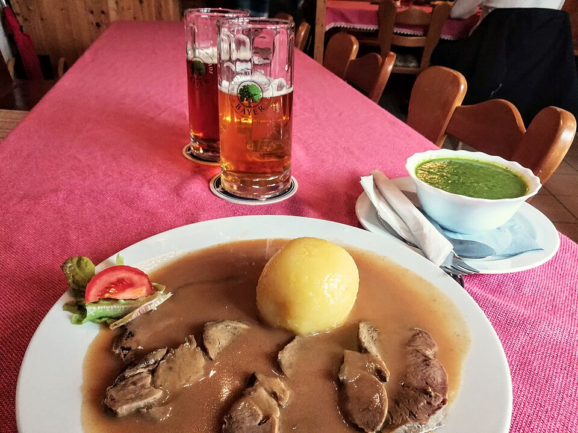

Carnes · Bovinos
Pernil de vitela assado

Ingredientes
- 1 pernil de vitela ou porco de 6 a 7½ kg
- 2 dentes de alho amassados
- 1 colher (chá) de pimenta-do-reino
- 2 cebolas em rodelas
- 1 xícara (chá) de caldo de carne
- 1 xícara (chá) de vinho tipo Madeira ou xerez seco
Modo de preparo
- Preaqueça o forno a 170 °C. Esfregue a carne com alho e pimenta.
- Espalhe as cebolas na assadeira; coloque a carne com a gordura para cima. Misture vinho e caldo e despeje sobre a carne.
- Asse cerca de 24 minutos por quilo (~2½ h para 6 kg), regando com o molho. Se as cebolas escurecerem demais, junte água.
- Retire a carne macia para travessa aquecida. Passe o molho na peneira; se estiver grosso, afine com mais caldo.
Observação: sem Madeira, use vinho branco seco. O cartão cita ~1 h de preparo ativo; o forno leva bem mais.